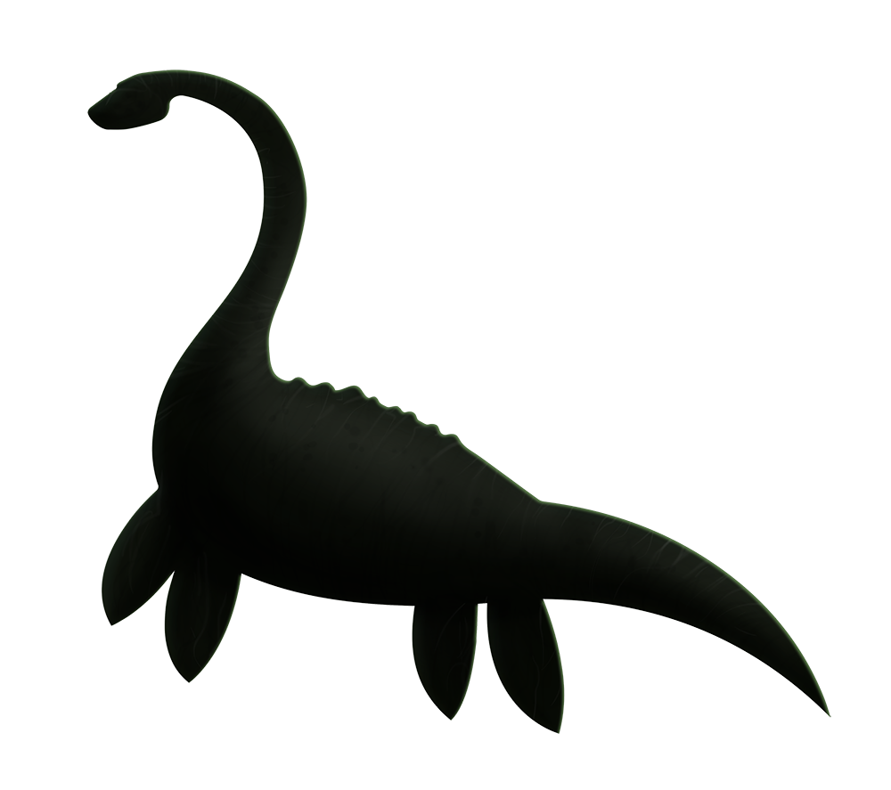
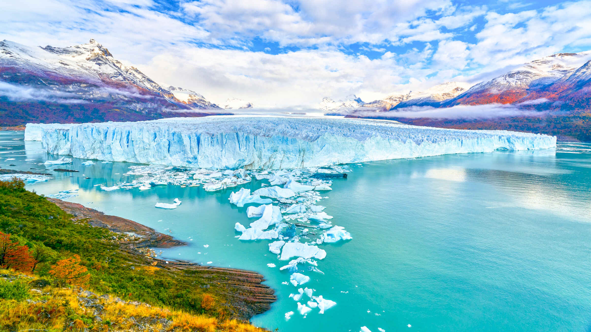
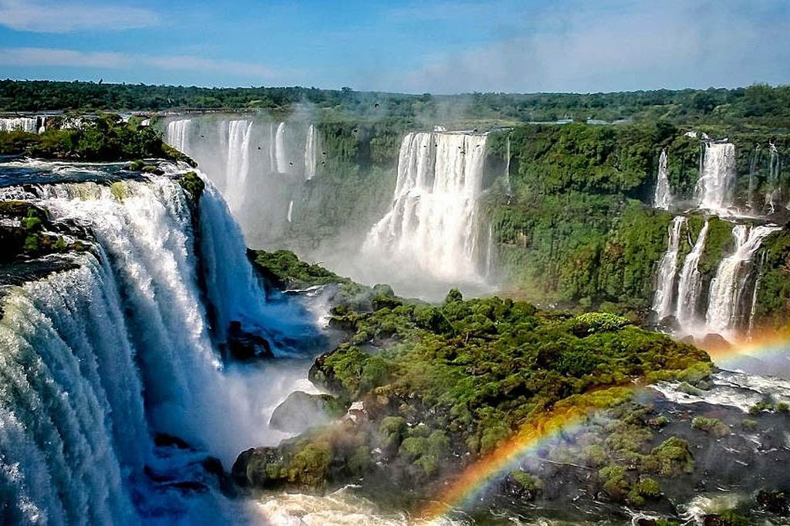

<!DOCTYPE html>

<html>
	<head>

		<title>
		El Lago Ness
		</title>
		<meta http-equiv="Content-Type" content="text/html; charset=utf-8"/>
	</head>
</html>

<h1> El Lago Ness</h1>
<p></p>

<body bgcolor= #b2c8eb>
<p align="center"><font size= "4" color= "black"><i>Highlands,Escocia</i> </p>

<link rel="stylesheet" type="text/css" href="../css/estilos.css" media="screen">

<body>
<h2> Localización </h2>
<p>Es un lago mediano a grande de agua dulce que <b>está en las Tierras Altas (Highlands) de Escocia</b>​ y se extiende a lo largo de unos 37 km al suroeste de Inverness. Su superficie se encuentra a 16 m sobre el nivel del mar. </p>
<p>En su extremo norte se hallan los estrechos de Bona, que lo comunican con el lago Dochfour, el cual es alimentado por el río Ness. </p>
<p>El lago Ness <u>es el segundo más extenso de Escocia</u> con una superficie de 56 km², tan solo por detrás del lago Lomond, pero debido a su gran profundidad media es el de mayor volumen de todas las islas británicas.</p>
<p>Se extiende aproximadamente 39 km al suroeste de Inverness.</p>
<p><a href="https://goo.gl/maps/pMbUpEQwx3rtXph79"></a></p>

<h2> Origen </h2>
<p>El origen del lago Ness <u>se remonta a hace aproximadamente unos 10.000</u> años. Se estima que se formó al final de la última glaciación en la época del Holoceno. Su temperatura promedio está situado en los 5.5 grados centígrados. Una de las características que sorprende de este lago es que nunca se ha visto congelado. A pesar de que en Escocia existen inviernos bastante gélidos con temperaturas bajo cero el amor nunca ha llegado a estar congelado.</p>

<p>Además, que en el interior del lago Ness nos encontramos con unas ruinas del castillo de Urquhart. Dicho castillo tiene una fecha que data desde los siglos 13 a 16 y que ofrece paseo guiados a sus visitantes.</p>
<h2> Leyenda </h2>
<p>Hay <b>rumores de un presunto gran animal o monstruo que mora en el lago han circulado durante siglos desde hace 1655 años</b> , aunque la precisión, credibilidad y veracidad de tales historias siempre se ha cuestionado. Muchos habitantes locales argumentan a favor de su existencia, sin embargo algunos escépticos sugieren que estos rumores de Nessie existen en su gran mayoría para favorecer a la industria del turismo y al folclore local.</p>
<p> ¿Será verdad que Nessie esta nadando en ese lago todavía o nunca existió? Aquí puedes leer la leyenda:</p>
<p><a href="https://viajarporescocia.com/guia-de-escocia/la-leyenda-del-monstruo-del-lago-ness/"></a></p>

</body>

<table border="5" class="center">
<tr>

<td>
		<p><a href = '../index.html'><figcaption style = 'text-align:center'>Inicio</figcaption ></a></p>
	</td>
	<td>
		<p><a href = '../html/lagranbarreradecoral.html'><figcaption style = 'text-align:center'>La Gran Barrera de Coral</figcaption></a></p>
	</td>

	<td>
		<p><a href = '../html/elgranagujeroazul.html'><figcaption style = 'text-align:center'>El Gran Agujero Azul</figcaption></a></p>
	</td>

</tr>
<tr>
	<td>
		<p><a href = '../html/elgrancanon.html'><figcaption style = 'text-align:center'>El Gran Cañon</figcaption></a></p>
	</td>
	
	<td>
		<p><a href = '../html/glacialperitomoreno.html'><figcaption style = 'text-align:center'>Glacial Perito Moreno</figcaption></a></p>
	</td>
	<td>
		<p><a href = '../html/cataratasdeliguazu.html'><figcaption style = 'text-align:center'>Cataratas del Iguazú</figcaption></a></p>


	</td>
</tr>

</table>
